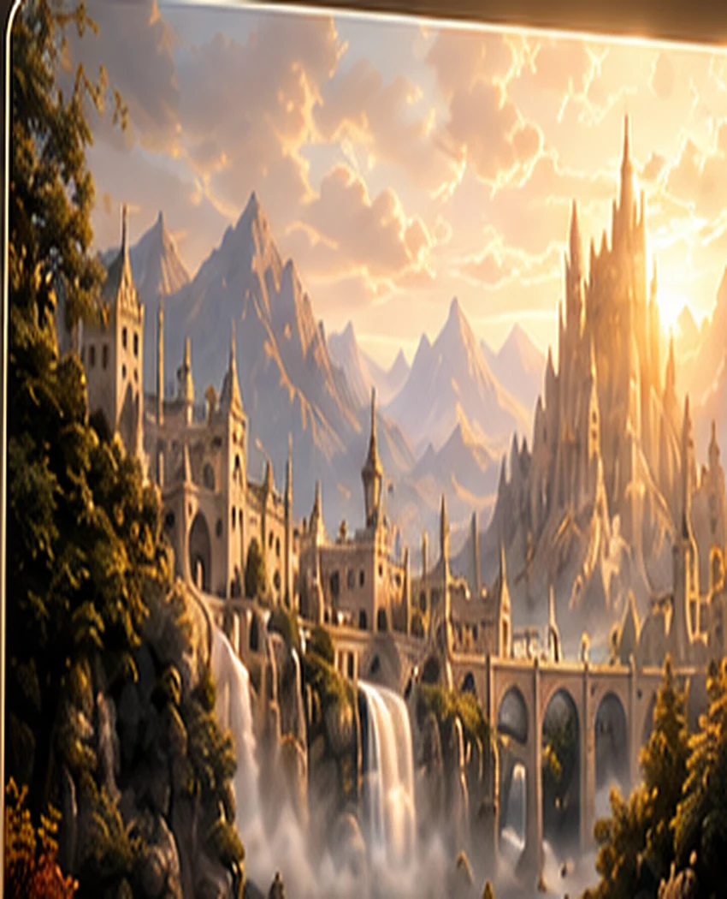

Dirección musical
Composición original, reinterpretaciones y desarrollo de identidades sonoras.
Un universo sonoro
Música cinematográfica y emocional para universos originales.
Cargando canales…
Música para otros mundos
Música cinematográfica y emocional
para universos originales.
Composición original, reinterpretaciones y desarrollo de identidades sonoras.
Imágenes que amplían cada historia y construyen su atmósfera.
Experiencias musicales conectadas por emoción, cine y cultura.
Colaboraciones / Consultas / Producción musical
ARTE VISUAL · SELECCIÓN
Selecciona una colección. La vista previa se adapta a los cuatro dispositivos al instante.
Vista conceptual del catálogo. Consulta disponibilidad, resolución y condiciones antes de solicitar archivos premium. Puedes disfrutar y compartir las muestras libremente; un aporte es opcional.
COLECCIÓN VISUAL CINEMÁTICA

Una misma escena, cuatro encuadres de muestra.